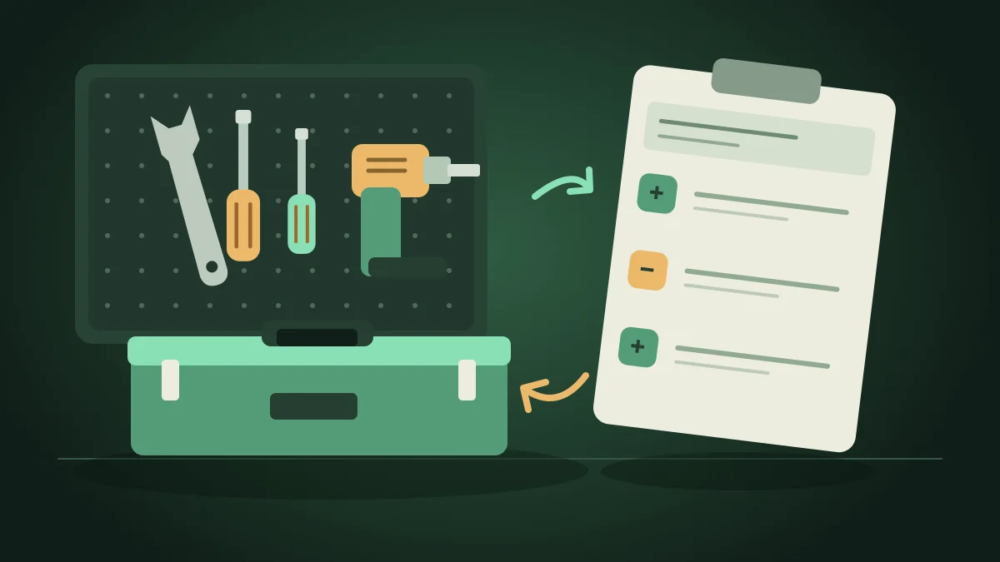

Бесплатный комплект для кладовой мастерской
Расходники, приход, выдача, возврат и остаток: начните с готовой таблицы или печатного журнала. Скачивание прямое, без регистрации и передачи контактов. В примере только вымышленные данные.
Заполненный пример
Скачать пример · XLSXСкачать пример · PDFВозврат увеличивает остаток отдельной записью. Отрицательный остаток требует проверки журнала.
Таблицы достаточно, если учёт ведёт один человек и записей немного. Приложение удобнее, когда приход и выдачу нужно записывать у места хранения, искать историю и получать отчёт с телефона. Импорт этого XLSX в приложение не заявлен.
Как получить отчёт Excel с телефона
Открываем ведомость кладовой и нажимаем «Скачать Excel». Приложение создало настоящий XLSX: в строке отвёртки — 9 штук. Пример отчёта можно скачать ниже.
Текст ролика
- Открываем «Отчёты» из главного экрана. В примере действует тестовый PRO.
- Выбираем ведомость кладовой и проверяем данные. Экспорт доступен с действующим демо или PRO.
- Нажали «Скачать Excel». Получен настоящий XLSX: отвёртка — 9 штук. Файл приложен к ролику.
Для экспорта нужен действующий демо или PRO. Ролик собран из отдельных кадров настоящего интерфейса; системное меню отправки и открытие XLSX в другом приложении не показаны.
Скачать MP4 · 414 КБСкачать подписи · SRTСкачать отчёт из ролика · XLSX
Почему таблица быстро устаревает
Если инструмент выдают в течение дня, таблица на отдельном компьютере часто обновляется с задержкой. В этот промежуток фактическое наличие уже изменилось, а учёт продолжает показывать старые данные.
Телефон удобен тем, что находится рядом с местом выдачи. Операцию можно занести сразу и затем проверить остаток.
Как организовать простой учёт инструмента
Полезно заранее определить категории и места хранения, чтобы одинаковые позиции не появлялись под разными названиями.
- Создайте места хранения.
- Добавьте инструмент в каталог.
- Проведите начальную сверку.
- Выдавайте инструмент отдельной операцией.
- Возврат фиксируйте как отдельное движение, а не ручную правку числа.
- Периодически сверяйте фактическое наличие с остатком.
Что смотреть при расхождении
Сначала проверьте историю операций: не была ли выдача записана дважды, не осталось ли перемещение незавершённым в реальном процессе и не изменялся ли остаток вручную. Такая проверка обычно полезнее, чем немедленная корректировка итогового числа.